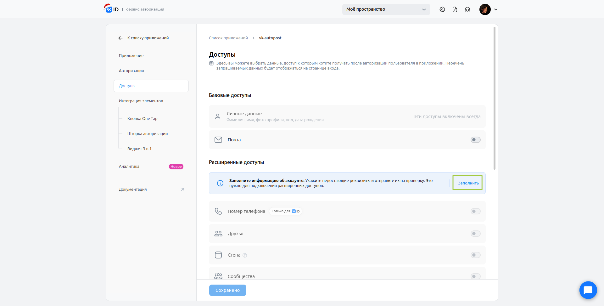

Инструкция
В результате выполнения инструкции мы получим: id standalone-приложения вконтакте, user access token и group access token.
Для этого нам понадобятся:
- телефон к которому привязан аккаунт вконтакте
- паспорт
- ноутбук/компьютер с доступом в интернет и любым текстовым редактором
- Откройте браузер и войдите на свою страничку вконтакте
-
Перейдите по ссылке - https://vk.com/apps?act=manage
У вас должна открыться такая страничка: Нажмите кнопку "Создать".
Нажмите кнопку "Создать".
-
У вас откроется вот такая страничка:
 На ней нужно выбрать "Standalone-приложение".
На ней нужно выбрать "Standalone-приложение".
-
VK попросить вас авторизоваться снова:
 Нажмите "Продолжить как ..."
Нажмите "Продолжить как ..."
-
Если у вас уже есть специальный аккаунт, то у вас откроется страница "Мои приложения".
Нажмите кнопку "Добавить приложение" и переходите к шагу номер 7.
В противном случае откроется страница, где вас попросят указать тип аккаунта, выберите "Физическое лицо" и нажмите кнопку "Далее" - На следующем шаге необходимо проверить и дополнить информацию о себе. Все поля и галочки должны быть заполнены. После заполнения и проверки правильности данных нажмите кнопку "Создать аккаунт".
-
У вас откроется страничка "Регистрация приложения". Поля, которые необходимо заполнить, выделены зелёным. Перепишите данные со скриншота и
нажмите "Далее".

- На следующем шаге так же как на скриншоте укажите ссылку на emc.tusur.ru и после этого нажмите "Создать приложение"
-
VK снова попросит у вас подтвердить действия
 Введите код и автоматически откроется следующая страница
Введите код и автоматически откроется следующая страница
- На открывшейся странице не нужно ничего выбирать, просто нажмите "Настроить позже"
- После этого вы окажетесь на странице настроек приложения. На боковой панели слева необходимо перейти в раздел "Доступы".
- В разделе "Доступы" необходимо указать недостающие реквизиты, для этого нажмите кнопку "Заполнить" 
-
После этого вы окажетесь на странице "Информация о разработчике". Разработчик это вы :)
Проверьте правильность "Основной инфомации", заполните паспортные данные (это безопасно) и нажмите кнопку "Отправить на проверку". Это может занять некоторое время (мы не знаем какое), поэтому оставьте вкладку открытой и время от времени проверяйте. Vk должны отправить уведомление, когда данные будут проверены, но я не помню чтобы мне они приходили. -
Когда паспортные данные пройдут проверку, справа появится синяя галочка с подписью "Аккаунт подтверждён"
Можно возвращаться к списку приложений.
После нажатия кнопки "К списку приложений" у вас откроется страница со списком приложений, которую мы уже видели в пункте 5 этой инструкции. Нажмите на карточку с приложением, которое мы создали. - На странице приложения нужно перейти на вкладку "Доступы" и в разделе "Расширенные доступы" включить доступ для стены и фотографий как на скриншоте и нажать кнопку "Сохранить".
-
Вернитесь на кладку "Приложение".
На компьютере откройте приложение "Блокнот" или любой другой тектовый редактор (не закрывайте его до конца инструкции).
В блокнот нужно выписать ID приложения и Защиённый ключ. Для просмотра защищённого ключа нажмите на значок глаза и в появившемся окне введите код подтверждения, который придёт вам на телефон. Открывшийся ключ выпишите в блокнот. Результат будет выглядеть примерно так (у вас будут свои значения):
-
В блокнот скопируйте следующую ссылку:
https://oauth.vk.com/authorize?client_id=ID_ПРИЛОЖЕНИЯ&display=page&redirect_uri=https://api.vk.com/blank.html&scope=wall,photos&response_type=codeИ замените ID_ПРИЛОЖЕНИЯ на ID который вы выписали ранее. Результат будет выглядеть примерно так: Убедитесь, что в ссылке нет лишних пробелов и что вы не удалили нужные символы "?" и "&".
Убедитесь, что в ссылке нет лишних пробелов и что вы не удалили нужные символы "?" и "&".
- Ссылку, которая получилась в блокноте, необходимо скопировать и вставить на новой вкладке в браузере, в котором вы выполняли все предыдущие действия. Ещё раз убедитесь, что в строке нет пробелов и нажмите "Enter" на клавиатуре.
- Появится окно подтверждения входа, нажмите "Продолжить как ..."
-
При успешном выполнении вы увидите на экране следующую запись:
 Скопируйте ссылку из адресной строки и вставте в блокнот.
Скопируйте ссылку из адресной строки и вставте в блокнот.
 Результат будет выглядеть так (у вас будут данные после слова code будут отличаться)
Результат будет выглядеть так (у вас будут данные после слова code будут отличаться)

-
Теперь в блокнот скопируйте следующую ссылку:
https://oauth.vk.com/access_token?client_id=ID_ПРИЛОЖЕНИЯ&client_secret=ЗАЩИЩЕННЫЙ_КЛЮЧ&redirect_uri=https://api.vk.com/blank.html&code=СЕКРЕТНЫЙ_КОДВместо ID_ПРИЛОЖЕНИЯ снова укажите ID, который мы выписывали ранее.
Так же замените слова "ЗАЩИЩЕННЫЙ_КЛЮЧ" на ключ, который мы выписывали вместе с ID приложения.
Слова "СЕКРЕТНЫЙ_КОД" необходимо заменить на код, который идёт после "code=" в ссылке, которую мы получили на предыдущем шаге (это место выделено на скриншоте предыдущего шага). В итоге получим такую ссылку: Снова убедитесь, что в ссылке нет лишних пробелов и что вы не удалили нужные символы "?" и "&".
Снова убедитесь, что в ссылке нет лишних пробелов и что вы не удалили нужные символы "?" и "&".
- Скопируйте получившуюся ссылку и вставте на новой вкладке в браузере: Ещё раз убедитесь, что в строке нет пробелов и нажмите "Enter" на клавиатуре.
-
ГОТОВО! Мы получили access token
 Скопируйте в блокнот всю появившуюся строчку (та, что на экране, а не из командной строки):
Скопируйте в блокнот всю появившуюся строчку (та, что на экране, а не из командной строки):
 Получившийся текстовый файлик сохраните и отправьте разработчику (мне :)) в телеграм
Получившийся текстовый файлик сохраните и отправьте разработчику (мне :)) в телеграм